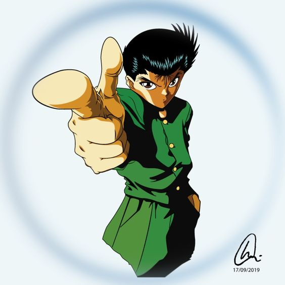
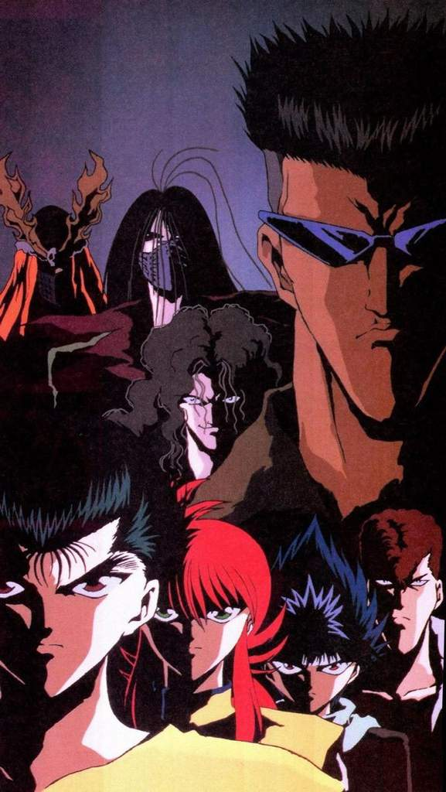
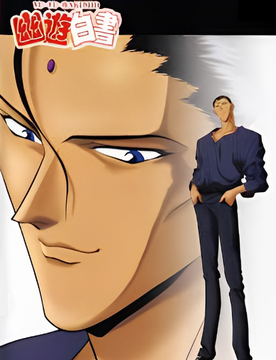

História
O anime como dito antes, possuí 112 episódios dividido em 4 sagas: Saga do Detetive Espiritual, Torneio das Trevas,
Portão do Inferno: Capítulo Negro e Makai: Três Reis.
Abaixo nós temos um resumo das 4 sagas da série.
Saga do Detetive Espiritual

Como dito antes, após ser ressuscitado Yusuke Urameshi se torna um Detetive Espiritual, com a missão de proteger
o Mundo dos Homens das ameaças sobrenaturais. Podemos dividir essa saga em 4 partes.
1. Roubo dos Tesouros: Yusuke possuí a missão de recuperar 3 objetos sagrados que foram roubados do Mundo Espiritual, sendo
respectivamente: A Bola Gaki (Que suga a alma de humanos), a espada Kouma (Que transforma a pessoa em Youkai ao ser cortado) e o
Espelho das Trevas (Que realiza um desejo ao ser usado em Lua cheia). Nessa parte é que são apresentados outros 2 personagens
principais: Hiei e Kurama.
2. Lando, o assassino de mestres: Em outra missão, Yusuke deve infiltrar em um processo onde Genkai, uma respeitada mestra,
vai escolher seu pupilo e descobrir no meio dos candidatos quem é Lando, um demônio que já roubou as técnicas de diversos
mestres e os matou. O herói deve impedir que o mesmo aconteça com a Genkai.
3. As Quatro Bestas: O novo caso de Urameshi é impedir um grupo infernal que deseja invadir o mundo Terreno usando
insetos invisíveis que sugam a vida das pessoas e as transformam em zumbis. Esse grupo é composto por 4 membros:
Genbu, Byakko, Seiryu e Suzaku, eles são inspirados em Deuses Celestiais da China.
4. Yukina, a triste garota: Uma menina é mantida presa e torturada por um magnata por causa de suas lagrimas que se transformam
em pedras raríssimas, e ela deve ser resgatada a garota em questão é Yukina, irmã de Hiei. E enquanto Yusuke, Botan e o Kuwabara
vão para a missão, o sequestrador, e outros ricaços, apostam nas lutas que os heróis vão enfrentando no caminho. As vitorias dos
heróis fazem o senhor Tarukane ficar cada vez mais pobre, perdendo uma apostas atrás da outra para Sakyo, um dos magnatas do clube,
porém nos são apresentados os irmãos Toguro, enfrenta-lós não foi facil, os heróis quase morrem, mas felizmente eles conseguem
derrotar a dupla. Mas, por fim descobrimos que eles fingiram perder, pois na verdade eles estavam trabalhando para o Sakyo e
agora estão muito interessados em enfrentar os garotos novamente, dando início a saga seguinte.
Saga do Torneio das Trevas
Logo após a resolução do sequestro de Yukina, Toguro reaparece à frente de Yusuke exigindo que ele participe do Torneio das trevas. O herói então volta a treinar e dias depois ele se junta com Kuwabara, Kurama, Hiei e com um lutador desconhecido chamado de Mascarada, que mais tarde é revelado ser Genkai (A mestra de Yusuke). Após lutar contra diversos times, entre esses times podemos citar: Time Rokuyokai, time Dr. Ichigaki, time Mashoutsukai, time Uraotogi e finalmente o time Toguro. No final, com muita dificuldade, o time Urameshi acaba vencendo o torneio.
Saga do Portão do Inferno: Capítulo Negro
Novamente, Yusuke recebe a missão de derrotar Shinobu Sensui, um ex-detetive espiritual que ficou traumatizado ao ver uma fita chamada: Capítulo Negro, onde mostra alguns humanos cometendo crimes horríveis, após isso, ele enlouqueceu e perdeu a esperança na humanidade. Então ele tem o desejo de abrir uma porta dimensional entre o Mundo das Trevas e o Mundo dos Homens para que todos Youkais possam invadir e destruir o Mundo dos Homens, matando todos os seres humanos existente nele. É nessa saga que descobrimos que Yusuke é descente de Youkais, pois ao morrer na luta contra Seusui, ele acaba sendo revivido como descendente do clã maligno. No final da luta ele acaba sendo possuído pelo seu ancestral Raízen (O Deus da Guerra), então Yusuke decide ir para o Mundo das Trevas para conhecer seus ancestrais. Isso dá origem a 4º e última saga da série.
Saga do Makai: Três Reis

Nesta 4º e última saga Yusuke vai ao Mundo das Trevas para conhecer seus antepassados. Ao chegar, ele descobre que o Mundo das Trevas está passando por um momento político difícil, onde habitam 3 reinos, cada um composto por 1 rei, sendo eles: Raízen, Yomi e Mukuro. O 1º rei citado está a beira da morte, então caso ele morra, Yomi e Mukuro decidiram quem irá dominar o Mundo das Trevas, causando um desequilíbrio e gerando uma guerra violenta nesse mundo. Então após a morte de Raízen, Yusuke por ser seu ancestral, acaba virando o novo rei do reino. Então para resolver esse problema político, ele acaba criando um torneio como uma alternativa à guerra total prevista para ocorrer após a morte de Raízen. A regra é a seguinte, quem quer que seja que vença o torneio, se tornará o novo rei, e os outros deveram respeitá-lo. Depois do torneio, é selecionado um novo rei e o Mundo das Trevas volta ao equilíbrio de antes. Após isso, Yusuke acaba voltando para o Mundo dos Homens voltando a viver sua vida normalmente junto a seus amigos.
Duração das Sagas
| Sagas | Duração |
|---|---|
| Detetive Espiritual | Episódios 1 até 25 |
| Torneio das Trevas | Episódios 26 até 66 |
| Capítulo Negro | Episódios 67 até 94 |
| Três Reis | Episódios 95 até 112 |
Abertura
Para finalizar, fique com a abertura do anime em português, exibida pela Rede Manchete.